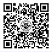

问：双证认证课程上课形式时间及准备。
答：就是培训班的形式，周一到周六上课，周天休息，一天上课6～8小时。
带上小本本穿上运动服来学院上课就好了。
问：双证认证课程主要内容是什么？
答：双证认证分两个板块。第一个板块为国家健身教练职业资格证书认证
培训，讲授健身教练的基本知识和实操能力，共120个学时。第二板块为
FaceBody认证教练培训，讲授特色工具的使用，运动能力训练方法论，
训练动作，课程设计等实用内容。共80个学时。
问：什么是国职证书？
答：国职健身教练证书属于国家级证书，是由我国权威部门：国家体育总局
负责培训、考核和颁发的，全称“健身教练国家职业资格证”。分为四个等
级：初级、中级、高级、指导师，大家在考取时需要从初级入手，逐级考取。
不过，四个等级的证书不用全部拿到，只要拿到初级国职证书之后，就可以
顺利进入健身行业。初级国职考核分为：理论和实践两项，同时考核通过之
后，才能拿到国职证书。
理论包括：运动解剖学、运动生物力学、运动生理学、运动营养学、健康体
适能，以及公共理论：健身行业法律法规、健身教练职业道德规范。
实践包括：体能，有坐姿体前屈，男生中指过脚尖，女生手腕过脚尖；俯卧撑，
男生40，女生15；徒手下蹲，男生60，女生40。器械，器械的抗阻练习，
肌肉主被动拉伸，有氧器械使用方法和教学技巧。
问：如何报名？
答：通过 加微信 NeoMei，电话：021-37898830，及邮件：
Neo.Mei@facebodychina.com 均可报名。报名信息： 姓名，
联系电话，报名课程。我们的招生顾问会联系您。
问：有优惠吗？
答：一个月的含双证的职业资格培训，8800元已经非常优惠了。前十位报名
者享受95折优惠，介绍学员报名还可以获得300元返利。多介绍多获取返利，
价格就会更加优惠了。
问：什么时间开始上课？
答：双证认证课程每月15日开班授课，为期一个月。其他专项课程，视报名人
数开班，5人以上即可开班，具体时间招生顾问会联系学员说明。
问：食宿问题如何解决？
答：培训费用不包含食宿，学院内有私厨，学员可通过招生顾问在私厨包伙，
或去附近饭点吃饭，学院靠近万达商圈，餐饮外卖都很丰富。住宿问题，可以
通过招生顾问帮忙联系附近快捷酒店解决。
问：包就业吗？
答：通过双证认证的教练，FaceBody会择优录取为旗下连锁运动馆的全职教练，
未能录用的认证教练也可以作为兼职教练在FaceBody旗下场馆代课。同时学院
同行业内多家场馆均有合作，所有通过认证的教练均会推荐给合作单位。
问：认证通过率如何，未通过可以重修吗？
答：只要学员认真学习，基本都可通过认证考试，考试通过率在80%以上。未通过
的学员享有一次免费培训的机会，只需缴纳700元的考试费用即可。
问：学院地址在哪？
答：上海松江区茸梅路1177弄8号楼1楼。地铁9号线松江大学城地铁站附近。

官方微信 / FaceBodyCollege
学院地址 / 上海市松江区茸梅路1177弄8号101室
电话报名 /
021-37898830
021-37898830
报名邮件 /
Neo.mei@facebodychina.com
Neo.mei@facebodychina.com
报名微信 / NeoMei